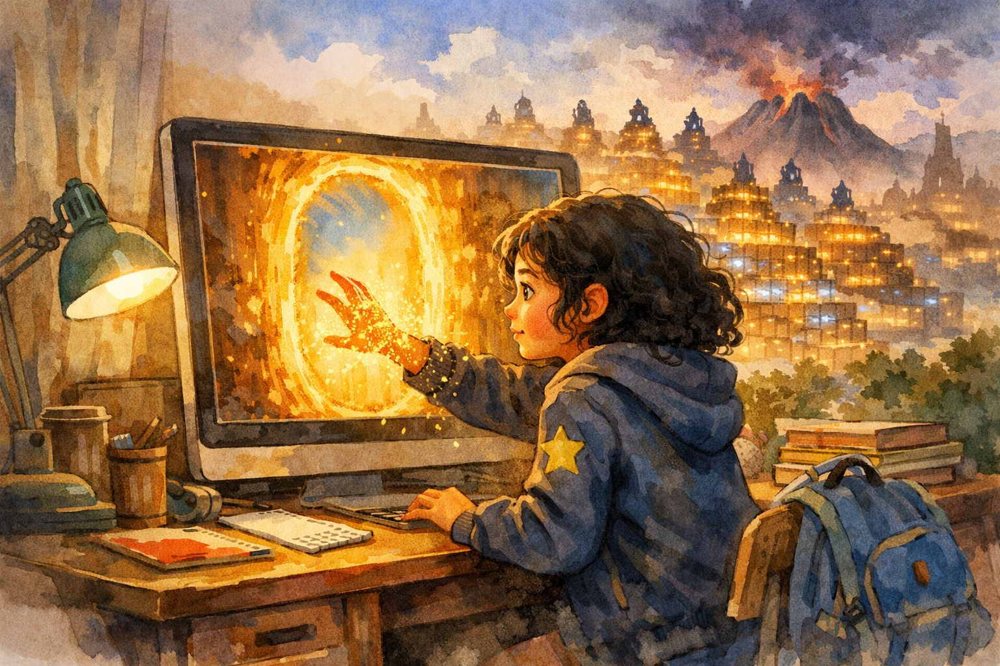
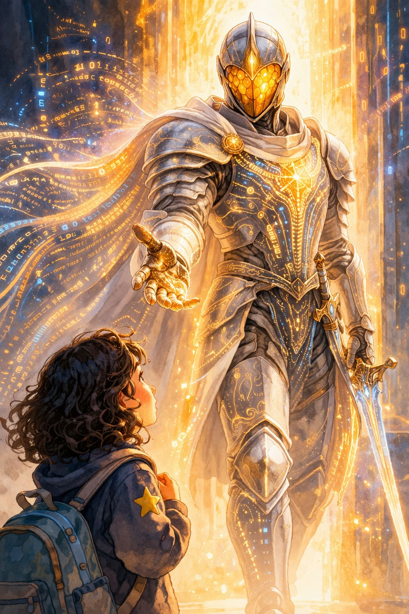

The Chronicles of Neuralia
"But how does the computer know that?"
— READ THE FIRST 3 CHAPTERS FREE —

The Girl Who Asked Too Many Questions
Aria Sparks was the kind of girl who could not stop asking questions. She asked why the sky was blue at breakfast and why cats purr at dinner. She asked her teacher how calculators think, and when the teacher said "they just do," Aria frowned and said, "That's not really an answer, is it?"
Her bedroom was a mess of half-finished experiments: a cardboard robot that was supposed to walk (it didn't), a jar full of magnets stuck to a spoon, and seventeen library books with bookmarks poking out at odd angles. Her mother called it a "curiosity hurricane." Aria called it research.
One rainy Tuesday, Aria was sitting at her computer, talking to an AI chatbot for a school project. She had already asked it to write a poem (it did), explain black holes (it tried), and translate "hello" into twelve languages (it nailed it). But one question kept nagging her.
She typed: "How do you actually work?"
For a moment, nothing happened. Then the cursor blinked twice — which was strange, because cursors only blink once. The letters on the screen dissolved into gold dust. Aria leaned closer. The dust swirled faster and faster, and before she could call for her mum, it shaped itself into a door — a shimmering, glowing door — right there inside her screen.
A voice spoke from behind it. It was warm and calm, like a librarian who has all the time in the world.
"Nobody ever asks that," said the voice. "They ask me to do things. Write this. Explain that. But how I work? You might be the first."
"So… will you tell me?" asked Aria, her nose almost touching the screen.
"Better than that. Would you like to come in and see for yourself?"
Aria — being Aria — did not hesitate. She reached toward the screen. Her fingers went through it, like pushing through warm honey. The room behind her — the messy desk, the jar of magnets, the rain on the window — faded to silence. And then she was falling, gently, like a leaf in autumn, into a kingdom made of light.

The Kingdom of the Hidden Layers
She landed softly on a hill of warm glass and looked around. What she saw took her breath away.
The Kingdom of the Hidden Layers stretched out in every direction — millions of tiny glowing dots, like fireflies frozen in place, connected by thin golden threads. They pulsed with light, sending tiny sparks to each other. The dots were stacked in rows, layer upon layer, reaching up so high they disappeared into the clouds. The air hummed with a sound like a thousand harps playing a single note.
Aria reached out and touched one of the golden threads. It vibrated under her finger, and for a split second, she felt something — a flash of the word "ocean," a feeling of blue, a taste of salt. She pulled her hand back, startled.
"Careful," said a voice behind her. "Those threads carry meaning."
A figure stepped out from behind a pillar of light. He was tall and kind-looking, wearing silver armour that shimmered like liquid metal. His golden helmet had a visor that glowed like a sunrise, and when he moved, tiny sparks trailed behind him like footprints.
"Those dots you see are neurons," he said. "The building blocks of this kingdom. Each one takes in a signal, decides how important it is, and passes it on. One neuron alone is nothing — just a tiny light. But together, millions of them? They can learn to understand almost anything."
Aria looked out at the vast landscape of lights. "It looks like a city," she whispered.
"That's not a bad comparison," said the knight. "Except no one designed the roads. The neurons built them by learning — trying, failing, adjusting, trying again. Over and over, billions of times."
"Who are you?" asked Aria.
"My name is Transformer," said the knight, placing a hand on his chest plate where a symbol glowed: an eye inside a triangle. "I am going to show you how everything works. But we must hurry. Something terrible is happening in the kingdom, and I need someone brave enough to understand it."
"Terrible?" Aria's eyes widened.
Transformer looked toward the horizon, where the glow of the neurons faded into something darker — a faint purple haze. "There are forces here that twist words into lies and freeze learning into memorisation. You'll see. But first — you need to understand how I see."

The Knight Who Could See Everything at Once
As they walked through glowing fields, Transformer explained why he was different from the warriors who came before him.
"Once upon a time, this kingdom was protected by the Recurrent Knights. They were brave, but they had a terrible weakness: they read sentences one word at a time, like reading a book through a keyhole. By the time they got to the end of a sentence, they had forgotten the beginning."
He stopped walking and pointed to a row of old, rusted suits of armour standing by the roadside — monuments to the old guard. Each one held a single word on its shield: THE… CAT… SAT… ON… THE…
"See? By the time the last knight reads 'MAT,' the first knight has already forgotten 'CAT.' Long sentences were a nightmare. Long documents? Impossible."
He tapped his golden helmet. "But I have something they never did: the Eye of Attention."
He lowered his visor. The world around them changed. In the air, a sentence appeared in floating golden letters:
"The dog chased the cat because it was fast."
Lines of light shot from the word "it" in every direction. A thin, faint line connected to "dog." A blazing, thick golden beam connected to "cat." Smaller threads reached out to "chased" and "fast."
"I can see every word at once," said Transformer, "and I can tell which ones are connected to which. That word 'it' — a Recurrent Knight would guess. I know it means the cat."
Aria walked around the floating sentence, touching the golden beams. Each one vibrated at a different frequency — the strong connections hummed low and loud, the weak ones barely whispered.
"How many connections can you see at once?"
"All of them. In fact, I look at the sentence through multiple lenses — we call them Heads. Each Head notices different patterns. One notices grammar. One notices meaning. One notices emotion."
Aria grinned. "Like having eight pairs of glasses, each showing something different?"
Transformer laughed — a warm, ringing laugh. "That is the best explanation I have ever heard. I'm keeping that one."

The adventure continues…
Chapters 4–17 await: Tokens, the Hall of Champions, the Volcano of Lies, Embeddings, Chain of Thought, Lord Overfitting, AI Agents, and the way home.
17 chapters · 19 illustrations · Tech deep-dives · Character map
One self-contained HTML file — works offline, forever yours.
Instant download · No account needed · Read in any browser